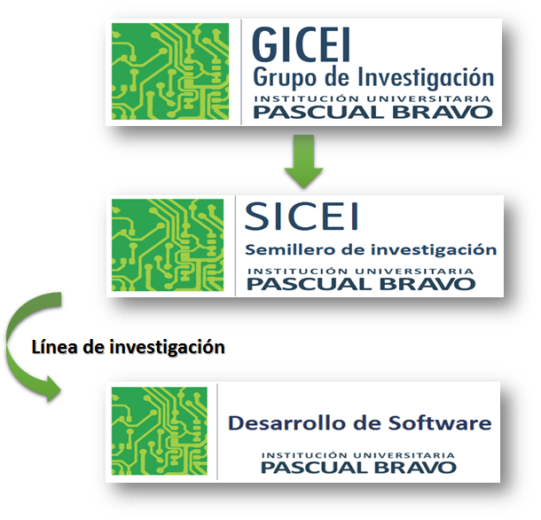

Estrategias heurísticas
Estrategias heurísticas con actividades interactivas al final
Ramiro Antonio Lopera Sánchez
Oscar Ignacio Botero Henao
Oscar Julián Galeano Echeverri
Miguel Alberto Becerra Botero
Javier Alberto Saldarriaga Cano
Institución Universitaria Pascual Bravo
Fondo Editorial Pascual Bravo
Medellín
Título de la obra
Estrategias heurístcas - Matemática
I.E. "JOSÉ GÁLVEZ" -Cajabamba
2018
Diseño del libro: Hugo Pari Silva Santisteban
Diseño de cubierta: Diana María Velásquez García
Librería turn.js: Emmanuel García
Herramienta de edición: DescartesJS
Fuente: Titillium
Fondo Editorial Pascual Bravo
Calle 73 73A-226
PBX: (574) 4480520
Apartado 6564
Medellín, Colombia
www.pascualbravo.edu.co

Excepto donde se indique lo contrario, el contenido creado en este libro está licenciado bajo una licencia Creative Commons Attribution 4.0. Todos los objetos interactivos y los contenidos de esta obra están protegidos por la Ley de Propiedad Intelectual.
6
Prefacio
Leer analíticamente un texto es dividirlo en unidades que proporcionen algún tipo de información y establecer, luego, cómo estas partes se interrelacionan y muestran el panorama de lo que se quiere decir. Al leer un problema de manera analítica, uno puede hacerse estas ¿cuáles son los datos que nos proporciona?, ¿qué datos son relevantes para resolver el problema?, ¿qué debemos encontrar?, ¿qué condiciones se imponen a lo que buscamos?, entre otras interrogantes que ayudarán a que el estudiante se familiarice y le pierda temor a la situación.

Ampliar
Figura 1. Estructura del grupo de investigación.
Fuente: diseño de los autores
7
¿Por qué HTML5?
La lectura analítica ayuda mucho en la comprensión lectora del texto que da origen a un problema, pero no garantiza el camino a su solución. Leer analíticamente no es identificar las palabras claves ni buscar tips para encontrar la variable (estos son procesos mecánicos que no ayudan a comprender cabalmente un problema). En la vida real, los problemas matemáticos pueden no contener esas palabras claves que aparecen en problemas diseñados para libros de texto, por lo que el estudiante enfocará erradamente un problema si hace uso de este mecanismo. La lectura analítica es importante en la comprensión de problemas, pues estos textos contienen elementos matemáticos como números, diagramas, relaciones dentro de una historia o un contexto real complejo, por lo que no es lo mismo que leer un cuento o un ensayo. De hecho, hay personas que comprenden perfectamente textos humanísticos, pero no aquellos que contienen elementos matemáticos.
El HTML5 tiene por objetivo la homologación de todos los buscadores y sistemas operativos para que cualquier dispositivo móvil pueda desplegar gráficos, animaciones y videos, entre otras aplicaciones multimedia. Desde 1998 el Consorcio de Internet (World Wide Web Consortium W3C) dejó de evolucionar el protocolo HTML y comenzaron a buscar nuevas maneras de desplegar una red más atractiva desde su base. Tras diversas pruebas y decisiones, en 2007 se formó el grupo actual de trabajo del W3C que revisa la implementación de HTML5.
8
¿Qué es un Objeto Interactivo de Aprendizaje ?
Dado que en este libro el núcleo de desarrollo es el objeto interactivo de aprendizaje, es necesario realizar un inciso en el que se detalle el significado conceptual del mismo, en especial cuando se le está anexando el calificativo de “interactivo”. Existe una amplia gama de definiciones sobre lo que debemos entender por un objeto de aprendizaje (OA). El Comité de Estándares de Tecnologías de Aprendizaje (LTSC: Learning Technology Standards Committee) propone la siguiente definición:
"Un Objeto de Aprendizaje es cualquier entidad, digital o no digital, la cual puede ser usada, reusada o referenciada durante el aprendizaje apoyado por tecnología […] Ejemplos de Objetos de Aprendizaje incluyen una lección, un simple archivo JPEG, contenidos multimedia, un video, simulaciones, cuadros digitales, animaciones…”.
Es común considerar como OA a cualquier recurso digital que pueda ser reutilizado en diferentes ámbitos educativos, teniendo en cuenta que el concepto de reutilización está influido por el contexto en el que puede ser utilizado un OA determinado. Una fotografía sin texto tiene más poder de reutilización que otra que lo incorpore, pues en este último caso se presentan problemas de comprensión del lenguaje.
En general, parece haber consenso en lo referido a que sean recursos digitales que se pueden combinar para construir lecciones, módulos, cursos o, incluso, todo un plan de estudios.
9
Visto de esta manera, el desarrollo de objetos de aprendizaje se configura como un proceso que contempla una secuencia que va desde el diseño, el análisis de herramientas disponibles, la definición de criterios, la reflexión, y a su vez su producción, aplicación y evaluación. La definición más aceptada, desde el contexto de los recursos digitales, establece que el diseño debe contemplar objetivos como: la reutilización, de ahí la posibilidad que brinda para construir unidades más complejas en diferentes contextos; la interoperabilidad, la durabilidad (objetos que no requieren de actualizaciones periódicas) y la accesibilidad (fácilmente identificados y encontrados, bien clasificados por categorías, lo que obliga a almacenarlos en metadatos asociados a él).
Todo lo anterior puede ser válido en el entorno de la web 1.0; sin embargo, en el contexto de los nuevos ambientes virtuales de aprendizaje, el concepto de OA adquiere un nuevo significado o, para ser más precisos, incluye un nuevo componente: la interactividad. Por tanto un OA debe diseñarse a partir de criterios como atemporalidad didáctica, reutilización, interacción y accesibilidad. No en vano, para el caso de las matemáticas, el proyecto ''Definición y selección de competencias clave'', impulsado por la Organización para la Cooperación y el Desarrollo Económico (OCDE), clasifica las destrezas matemáticas como herramientas interactivas, necesarias para resolver múltiples tareas en diversas situaciones; desde esta taxonomía, los OA de la web 1.0 no serían compatibles con estas destrezas, si bien se constituyen en recursos valiosos para los procesos de enseñanza-aprendizaje, ya que no permiten interacción alguna y por tanto podemos considerar que no son más que objetos de información.